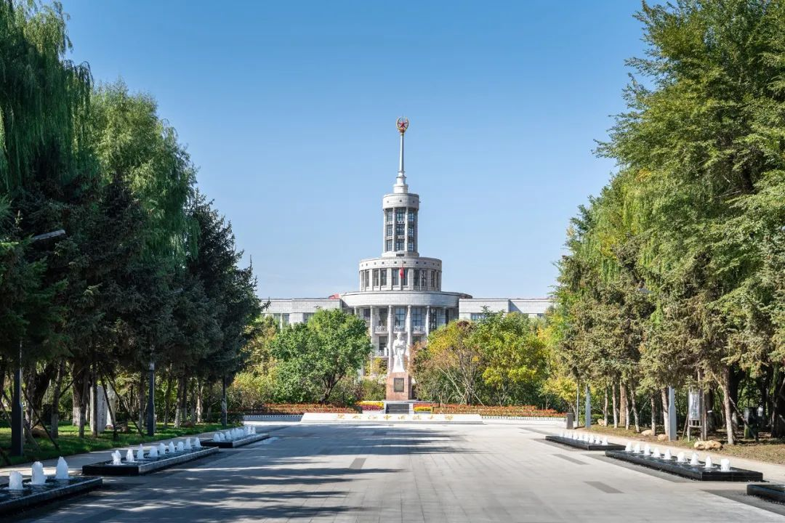

黑龙江中医药大学始建于 1954年，经七十年建设与发展， 学校已成为具有较高 教学、科研、医疗水平，在国内外有一定影响的高等中医药院校。学校于2004年全国首批获得教育部本科教学工作水平评估优秀结论， 2007年全国首家通过教育部本科中医学专业认证单位，连续三次荣获全国文明单位，2018年、2022年两次获批成为黑龙江省 “高水平大学和优势特色学科建设高校”， 2021年获批成为黑龙江省人民政府与国家中医药管理局共建高校，2023年获批成为经方与现代中药融合创新全国重点实验室共建单位。
学校下设16个学院、12个附属医院（4个直属）、1个中医药研究院、1个中医药高等教育研究院、31个教学医院和78个实习基地。 设有27个本科专业，涵盖 医、理、工、管等4个学科门类。有4个一级学科博士学位授权点，1个博士专业学位授权类别；6个一级学科硕士学位授权点，7个硕士专业学位授权类别。 现有全日制在校生 21728人，其中博士研究生 828人、硕士研究生 4131人、本科生 16641人、留学生 128人。